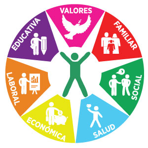

Inicio » Somos SCYF » Filosofía
Somos SCYF
SCYF es una asociación que agrupa a las empresas patrocinadoras y su personal para impulsar la calidad de vida de éste y su familia".
Siete
dimensiones
de la
persona
Las circunstancias del hombre y del tiempo evolucionan de manera inevitable. Por eso en SCYF evolucionamos permanentemente en nuestros sistemas, programas, servicios y beneficios.
El ser humano sigue siendo el centro y la finalidad que permanece en medio de todos los cambios.
Así SCYF conserva sus principios fundamentales y su propósito de impulsar el desarrollo del socio en siete dimensiones de la persona: Familiar, Social, de Salud, Económica, Laboral, Educativa y de Valores:
Dimensión Familiar: Ver más
SCYF fomenta la integración de la familia como núcleo afectivo y formativo, que constituye la base de la convivencia social. Ocultar
Dimensión Económica: Ver más
SCYF impulsa el desarrollo de hábitos para el fortalecimiento de un patrimonio estable, para que el socio y su familia vivan dignamente. Ocultar
Dimensión de Salud Física y Emocional: Ver más
SCYF promueve hábitos saludables para el fortalecimiento de las capacidades físicas y el equilibrio emotivo del socio y su familia. Ocultar
Dimensión de Valores: Ver más
SCYF impulsa la comprensión y vivencia de valores como pilares para la realización de planes de vida y carrera, formando mejores personas. Ocultar
Dimensión Educativa: Ver más
SCYF fomenta el desarrollo intelectual, académico y cultural; para contribuir a una mejor sociedad. Ocultar
Dimensión Social: Ver más
SCYF promueve la concientización de deuda social, la cultura de la legalidad, la responsabilidad por el bien común y el medio ambiente. Ocultar
Dimensión Laboral: Ver más
SCYF fomenta la pasión y excelencia en el trabajo, la identidad con nuestras empresas y un ambiente laboral constructivo y energizado. Ocultar
